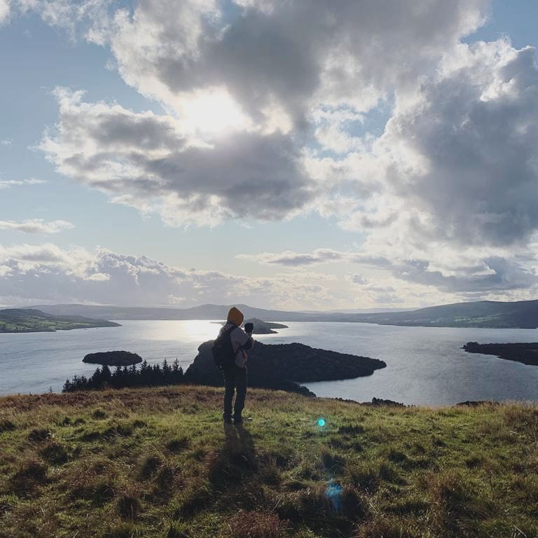
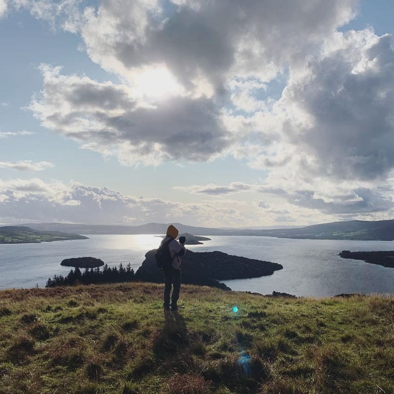

About Me
Hello! My name is Dillon Robinson and welcome to my portfolio website. I am a Canadian sound designer with a passion for audio. My love of films and video games shaped my love for sound design and my desire to create new media for the next generation to enjoy. I obtained my Master's of Science in sound design from the University of Edinburgh. My work has also been featured in a number of award winning films and video games. While establishing my sound effects company, Crying Giant, I have become heavily focused in video game sound design. It is my dream to work on AAA games like the ones that I love and to one day work at Skywalker Ranch which has been home to many sound design legends. If you are as passionate about film and video games as I am, let's make some noise and give our generation an escape from reality for an hour or two.